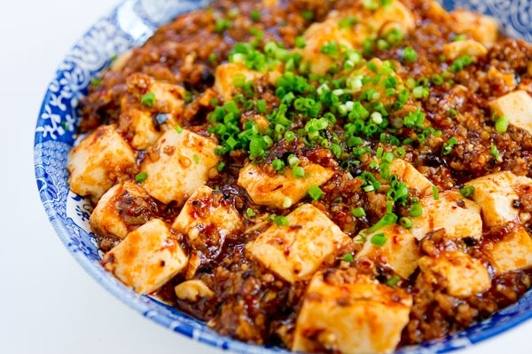

Mapo Tofu

Description
Soft, silky tofu in a rich, spicy, flavorful meat sauce...it's always a
crowd pleaser. There are a few ingredients to get to know if you haven't
had much experience with Chinese cooking, but the process is really
straight forward and can be a relatively quick dinner. It also keeps well,
so make lots and have extra for lunch the next day!
Ingredients
- 1 ½ tsp Sichuan peppercorns, toasted
- 200g ground beef
- 2 tsp soy sauce
- 5 cloves garlic, finely chopped
- 2-inch piece ginger, finely chopped
- ½ tsp ground black pepper
- 2 Tbsp spicy broad bean paste
- 1 Tbsp Chinese black beans, rinsed and roughly chopped
- 1 cup chicken stock or pork stock, UNSALTED, or water
- 2 Tbsp Chinese cooking wine (optional)
- 1 ½ tsp sugar
- 1 Tbsp cornstarch
- 350g smooth soft tofu, 1-inch cubes
- 1 Green onions, chopped
- Chili oil
Steps
-
Toast Sichuan peppercorns in a dry saute pan for a few minutes, stirring
constantly until they are aromatic and darken slightly. Grind in a
mortar and pestle or a coffee grinder until fine.
-
Heat a wok or a saute pan over medium high heat, add the ground beef (no
oil needed) and the soy sauce. Cook the beef, stirring constantly to
break it up into small pieces, until the water that comes out of the
meat has evaporated and the beef is browned slightly.
-
Turn off the heat and remove the beef with a slotted spoon, leaving any
fat behind. If your beef is quite lean and there isn't much fat left,
add a little more cooking oil to the pan so there's enough to saute the
garlic and ginger.
-
Turn the heat back on to medium, add garlic and ginger and saute until
the garlic starts to turn golden. Add ground black pepper, half of the
ground Sichuan peppercorns (or all of it if you like more of the
numbness and aroma), the broad bean paste and the black beans. Saute the
herbs and seasoning for about 30 seconds, then deglaze with stock,
scraping off any bits that are stuck to the bottom.
-
Add sugar, Chinese cooking wine, and the beef; simmer gently for 5 mins.
- Meanwhile, dissolve the cornstarch in about 3 Tbsp of cold water.
-
When the sauce is done simmering, pour in half of the cornstarch slurry
while stirring, and let it come back to a simmer. Check the sauce for
thickness, and if it's still too runny, add a little bit more of the
cornstarch slurry until the desired consistency is reached. Taste and
adjust seasoning as needed.
-
Add the tofu to the sauce and gently nudge the tofu around so it is
sitting in one layer. Spoon some the sauce over the tofu, then let it
simmer gently for another 5 minutes.
-
Transfer onto a serving bowl, drizzle with more chili oil if desired,
and garnish with chopped green onions and some of the reserved Sichuan
peppercorns if desired. Tip: Some people do not like the numbing
sensation from the Sichuan peppercorns, so it might be safe to serve the
extra Sichuan pepper on the side so people can sprinkle on more if they
want it.
- Serve with jasmine rice, and enjoy!